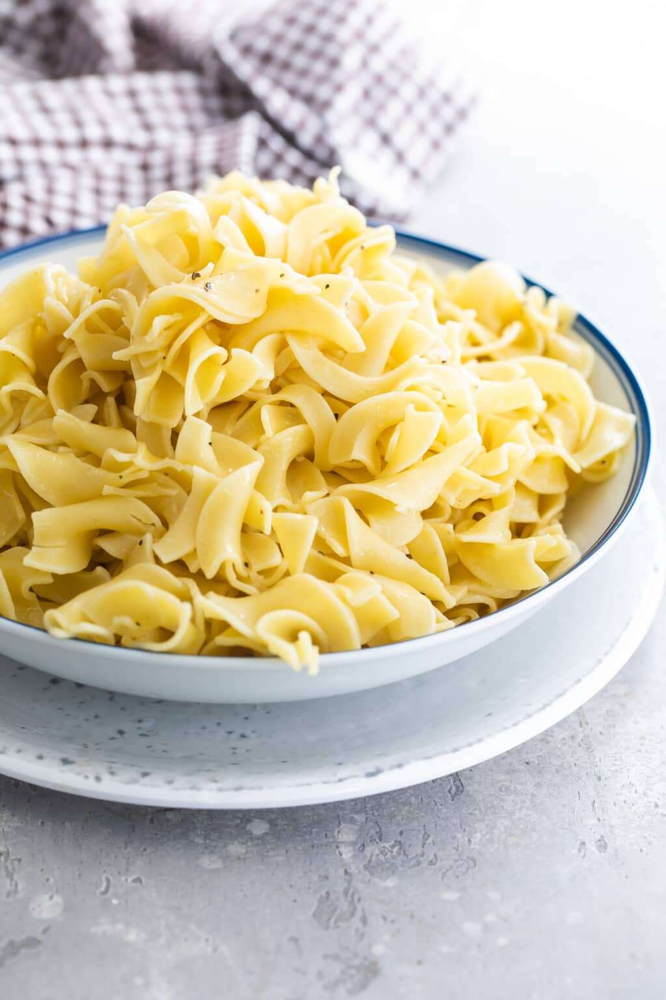

Buttered noodles

You are gonna want to eat it at any time!
Who doesn't love noodles? Who doesn't love butter? This
is the perfect match for any occasion!
Get ready to surprise anyone with this quick recipe. Enjoy!
Ingredients
- 1 package fettuccine noodles
- 6 tablespoons butter, cut into pieces
- 1/3 cup grated Parmesan cheese
- Salt and ground black pepper to taste
Steps
- Fill a large pot with lightly salted water and bring
to a rolling boil. Stir in fettuccine, bring back to
a boil, and cook pasta over medium heat until tender
yet firm to the bite, 8 to 10 minutes. Drain and
return pasta to pot.
- Mix butter, Parmesan cheese, salt and pepper into pasta
until evenly combined.